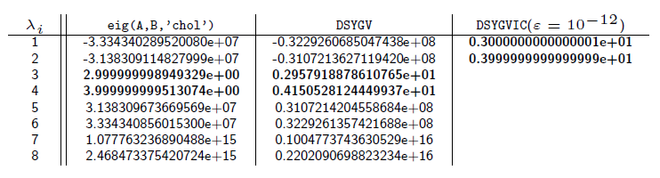

xSYGVIC implements the Fix-Heiberger reduction algorithm for solving ill-conditioned generalized symmetric eigenvalue problems in the form of
\begin{equation}\label{eq:gsep} Ax = \lambda Bx \end{equation}
where \(A\) and \(B\) are \(n\times n\) real symmetric matrices and \(B\) is positive semi-definite w.r.t. a threshold \(\varepsilon\).
Given the threshold \(\varepsilon\), xSYGVIC determines:
\(A-\lambda B\) is regular and has \(k\) \((0\leq k \leq n)\) \(\varepsilon\)-stable eigenvalues or
\(A-\lambda B\) is singular.
A MATLAB function dsygvic.m with test matrices and files dsygvic_test.zip.
Consider \(8 \times 8\) matrices:
\[ A=Q^THQ \quad \mbox{and} \quad B = Q^TSQ, \]
where
\[ H=\left[\begin{array}{c c c c c c c c} 6 & 0 & 0 & 0 & 0 & 0 & 1 & 0 \\ 0 & 5 & 0 & 0 & 0 & 0 & 0 & 1 \\ 0 & 0 & 4 & 0 & 0 & 0 & 0 & 0 \\ 0 & 0 & 0 & 3 & 0 & 0 & 0 & 0 \\ 0 & 0 & 0 & 0 & 2 & 0 & 0 & 0 \\ 0 & 0 & 0 & 0 & 0 & 1 & 0 & 0 \\ 1 & 0 & 0 & 0 & 0 & 0 & 0 & 0 \\ 0 & 1 & 0 & 0 & 0 & 0 & 0 & 0 \\ \end{array}\right], \]
\(S=\mbox{diag}[1,1,1,1,\delta,\delta,\delta,\delta]\) and \(Q\) is a random orthogonal matrix. As \(\delta \rightarrow 0\), \(\lambda=3,4\) are the only stable eigenvalues of \(A-\lambda B\).
The computed eigenvalues by (1) MATLAB function eig, (2) LAPACK routine DSYGV and (3) new LAPACK-style routine DSYGVIC (when \(\delta = 10^{-15}\)):

Chengming Jiang and Zhaojun Bai. Working Notes on the Fix-Heiberger reduction algorithm for solving the ill-conditioned generalized symmetric eigenvalue problem. (preprint)
Presentation slides.(slides)